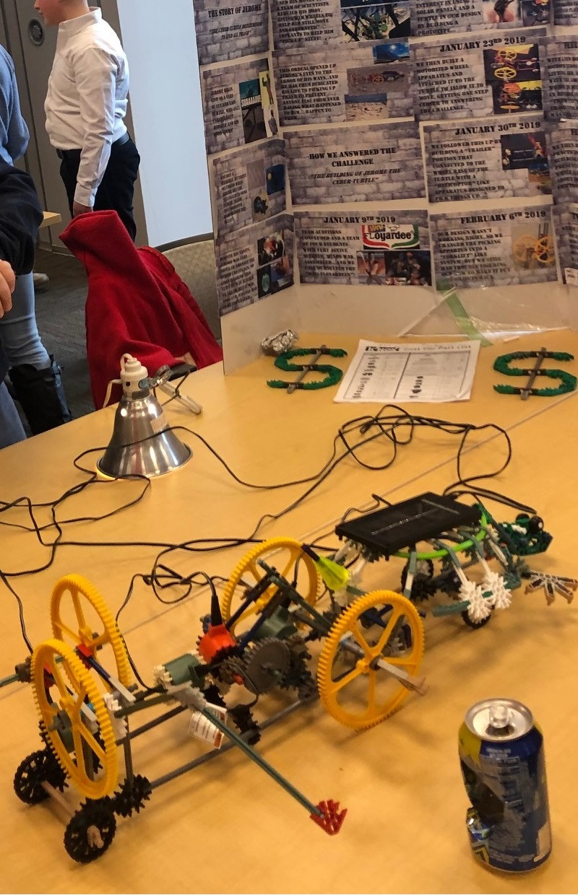
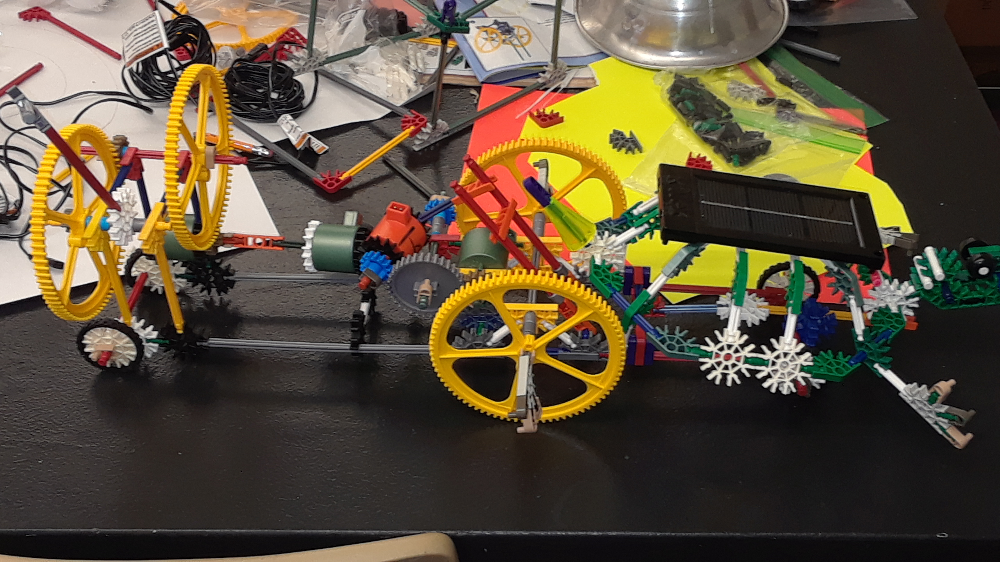
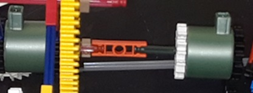
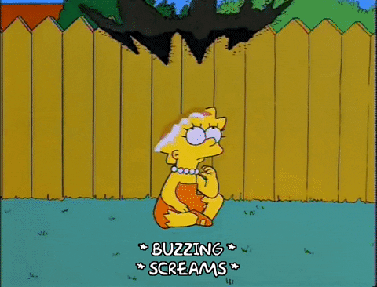
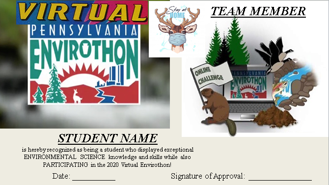
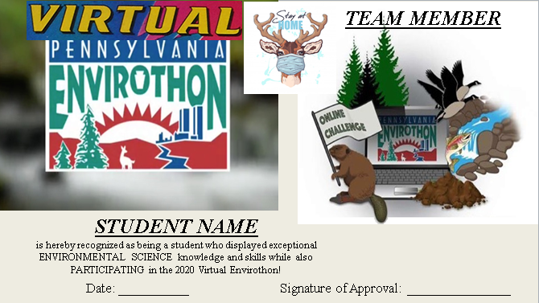

Mr. Floyd's Coaching Career

One of the reasons I became a teacher was to have the opportunity to coach and mentor people who were looking to improve themselves, learn how to do something better, and/or partake in competition and sport! I have many, many interests and hobbies, so I feel that I am a good fit for this role and I am thus always actively looking for more ways to get involved (especially in sports, which I have yet to do, but this is tops on my list!)! I have thus dedicated this page to all of the extracurricular things I have been a part of thus far!
2018-2019 K'NEX STEM Design Challenge
During the 2018-2019 School Year I was the coach of one of two 8th Grade K'NEX STEM Design Challenge Teams. This competition requires students to build a K'NEX machine that can accomplish a given task (this particular year's task was to pick up an object and move it 6 inches across a table), while also developing blueprints, a journal, and a presentation related to their design. I had an absolute BLAST helping my team of students develop their project, which we called "Jerome" (Jerome the Cyber-Turtle, to be exact)! Jerome utilized this EPIC "double-motor" design that allowed his "lift arm" to move back and forth. Jerome was also an amputee but he became a solar-powered, trash-picking up cyber-turtle, and yes, Jerome ended up looking just as awesome as this sounds!
  
2019 K'NEX Competition Presentation - Jerome The Cyber-Turtle
2019-2020 Envirothon
The 2019-2020 Envirothon...where to begin...! Well, let's start with the fact that I was starting work at a new school for this particular school year, and I was tasked with teaching Environmental Science. The curriculum called for a focus on preparing the students for the Pennsylvania Envirothon, an epic academic skills and knowledge challenge akin to an "Enviromental Marathon", while also making sure they learned about why to never run into a forest like mad-men since there could be BEES! :P
Most of the students in this class were participating in the Envirothon, but around half of the team was not. Regardless, preparations were going pretty well for several months and I was confident that our team was going to be strong! We were learning a lot about Forestry, Wildlife, and the Current Issue (Water Resource Management: Local Control and Local Solutions), and we had even been able to attend the Envirothon Training field-trip at a very nice local State Park!

All was going well...until...well...all was shutdown, cancelled, and shelved for the year! What do I mean by this? Well, the Coronavirus (COVID-19) Pandemic began, halting just about anything and everything. The Envirothon was unfortunately cancelled as well....until it wasn't! There ended up being a VIRTUAL Envirothon designed to replace the in-person event, and this ended up working out pretty well since we teachers were teaching our students virtually during these times anyways and I was thus able to help the students who did enter the Virtual Tournament succeed!
 

While this was not the ending anyone wanted for this year and this team, at the very least we managed to do our best when presented with the challenges at hand and CRUSH OUR ENEMIES! :P